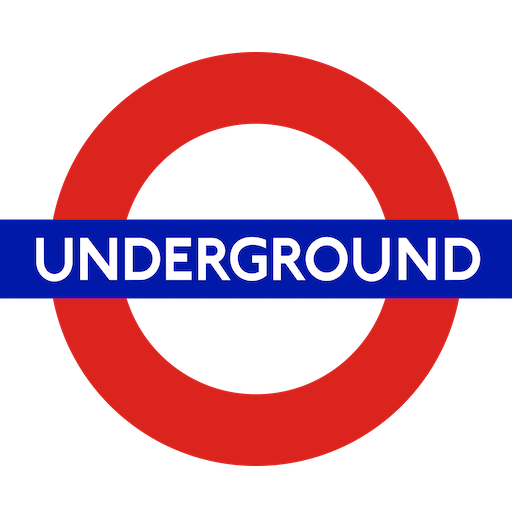
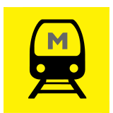
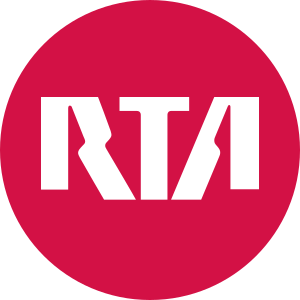
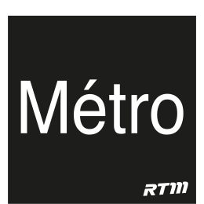

🚇 Metros
I’ve been to every station in:
New York
Paris
 London
Barcelona
Berlin
Chicago
Washington
Vienna
Montréal
Dubai
Prague
Brussels
Lisbon
Boston
Philadelphia
Lyon
Warsaw
Miami
Naples
I’ve been to some stations in:
 Seoul
Madrid
Moscow
Tokyo
Busan
Los Angeles
Stockholm
Hong Kong
Cairo
Rome
Saint Petersburg
Toronto
Rotterdam
Bangalore
Lille
San Francisco
Budapest
Sofia
Amsterdam
Toulouse
 Cleveland
Lagos
I’ve been to these cities:
Shenzhen
Guangzhou
Istanbul
Oslo
Ōsaka
Frankfurt
Bangkok
Sapporo
Atlanta
Fukuoka
Panama City
Helsinki
Glasgow
Baltimore
Lausanne
Kazan
Catania
Genoa
Want to visit:
Mexico City
Taipei
Milan
Munich
Hamburg
Athens
Bucharest
Bilbao
Copenhagen
 Marseille
🇨🇳
China (48 cities)
🇨🇳
Shanghai
🇨🇳
Beijing
🇮🇳
Delhi
🇮🇷
Tehran
🇸🇬
Singapore
🇲🇾
Kuala Lumpur
🇨🇱
Santiago
🇧🇷
São Paulo
🇯🇵
Nagoya
🇦🇷
Buenos Aires
🇮🇳
Hyderabad
🇹🇷
Ankara
🇨🇦
Vancouver
🇺🇦
Kyiv
🇩🇪
Nuremberg
🇻🇪
Caracas
🇺🇿
Tashkent
🇯🇵
Yokohama
🇧🇷
Rio de Janeiro
🇲🇽
Monterrey
🇶🇦
Doha
🇵🇭
Manila
🇩🇴
Santo Domingo
🇯🇵
Kyoto
🇺🇦
Kharkiv
🇧🇾
Minsk
🇯🇵
Sendai
🇯🇵
Kobe
🇲🇽
Guadalajara
🇦🇿
Baku
🇨🇴
Medellín
🇵🇪
Lima
🇵🇰
Lahore
🇬🇪
Tblisi
🇮🇹
Turin
🇩🇿
Algiers
🇰🇵
Pyongyang
🇺🇸
San Juan
🇧🇩
Dhaka
🇪🇨
Quito
🇷🇺
Nizhny Novgorod
🇷🇺
Novosibirsk
🇦🇺
Sydney
🇮🇩
Jakarta
🇻🇳
Hanoi
🇰🇿
Almaty
🇮🇳
Navi Mumbai
🇷🇺
Samara
🇦🇲
Yerevan
🇺🇸
Honolulu
🇷🇺
Yekaterinburg
🇺🇦
Dnipro